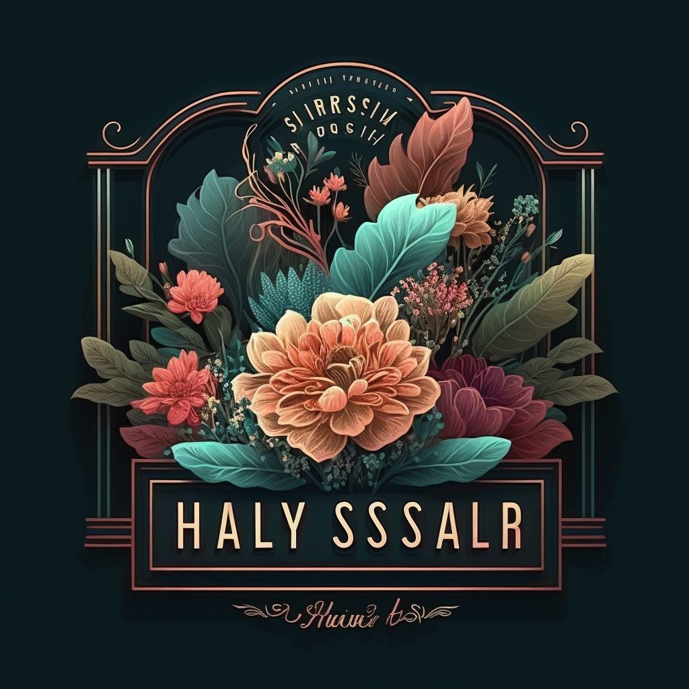

<header>
    
    <span class="titre"><h1>Wild Rose</h1></span>
    <nav role="main">
      <ul>
        <li><a href="accueil.php">Home</a></li>
        <li><a href="homeadmin.php">admin</a></li>
      </ul>
    </nav>
  </header>
  <style>
  * {
  box-sizing: border-box;
  /* permet de définir la boîte de chaque élément de la page comme une boîte en bordure de la zone, incluant les bordures et les marges */
}

/* Style pour le corps de la page */
body {
  font-family: sans-serif;
  margin: 0px;
  /* défini la famille de police de caractère utilisée pour le texte de la page */
}header {
    background-color: #FFFCEB;
    padding:auto;
    display: flex;
    justify-content: space-between;
    position: sticky;
    height: 80px;
    top: 0px;
    right: 0px;
    left:0px;}
    /* permet de créer une section en haut de la page qui contient un en-tête et une barre de navigation */
  img{
    border: 1px solid #ddd;
    border-radius: 4px;
    padding-left: 3px;
    width: auto;
  }
  span.titre {
    color: #8A0157;
    font-family: 'Lucida Handwriting','Segoe Script', Times, serif;
    margin:0% 0%;
    position: absolute;
    left: 90px;
    top:-10px;
  }
  nav  ul {
    list-style-type: none;
    margin: 13% 5%;
    padding: 0;
    display: flex;
    justify-content:flex-end;
    /* permet de définir une liste d'éléments pour la barre de navigation et d'aligner les éléments sur le côté droit de la barre de navigation */
  }
  
  nav  li {
    margin: 5% 35%;
    padding: 2% 10%;
    text-align: center;
    background-color:#8A0157;
    border-radius: 30px;
    /* permet de définir une marge de 10 pixels entre chaque élément de la liste de la barre de navigation */
  }
  a{
    outline: none;
    text-decoration: none;
    padding: 2px 1px 0;
    color:#FFFCEB;
  }
  
  nav li:hover {
    border-bottom: 1px solid;
    background-color: #6585f7;
    color:#FFFCEB
  }
  
  nav li:active {
    background-color: #6585f7;
    color:#FFFCEB
  }
  
  main {
    padding-top: 10px;
    }</style>